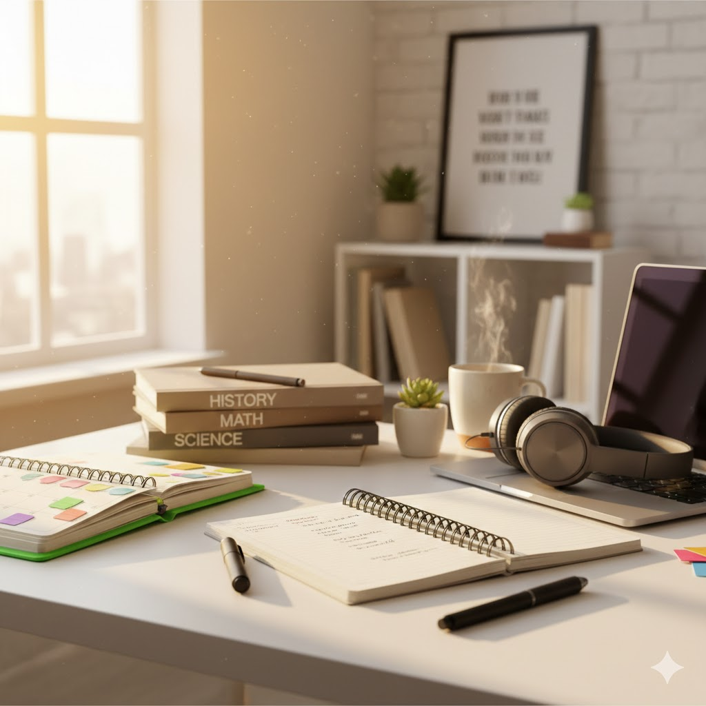

Dica: Use uma imagem que represente foco e organização.
1. Organize-se
A organização é a chave para o sucesso. Quando você tem uma rotina organizada, fica mais fácil administrar o tempo, as tarefas e os estudos.
- Use uma agenda: Anote todas as tarefas, provas e compromissos importantes. Isso vai ajudar você a não perder prazos.
- Monte um cronograma de estudos: Planeje um horário para estudar, seja para revisar matérias ou fazer lições de casa.
- Organize seu material: Mantenha seus livros e cadernos arrumados para facilitar o acesso durante os estudos.
2. Seja Responsável
Responsabilidade é essencial para o bom desempenho escolar. Isso significa cumprir prazos, se empenhar nas atividades e cuidar do seu aprendizado.
- Entenda seus compromissos: Sempre tenha em mente suas responsabilidades, como trabalhos de classe, estudos e até participação nas aulas.
- Cumpra prazos: Sempre entregue suas tarefas no prazo.
A troca de conhecimentos em sala de aula é fundamental.
3. Participe Ativamente das Aulas
A participação nas aulas é uma das formas mais eficazes de aprender.
- Preste atenção: Evite distrações e esteja atento durante as explicações.
- Pergunte e converse: Se algo não ficou claro, pergunte!
4. Desenvolva Hábitos de Estudo Eficientes
Estudar com eficiência é mais importante do que estudar por muitas horas.
Mapas mentais ajudam a fixar o conteúdo visualmente.
- Faça resumos: Tente resumir o conteúdo ou fazer mapas mentais.
- Revise com frequência: Faça revisões periódicas para reter melhor o conteúdo.
5. Cuide do Seu Bem-Estar
A saúde física e mental são fundamentais para um bom desempenho acadêmico.
- Durma bem: O sono é crucial para o aprendizado e a memória.
- Alimente-se corretamente: Uma boa alimentação ajuda na concentração.
6. Seja Respeitoso e Colaborativo
Ter uma boa convivência com seus colegas e professores é muito importante.
7. Tenha Persistência
Nem sempre o caminho será fácil, mas enfrentar desafios faz parte do processo.
Conclusão
Ser um bom aluno não significa ser perfeito, mas sim estar comprometido com o seu aprendizado. Aproveite as oportunidades de crescer e desenvolver novas habilidades!